Project 5A: The Power of Diffusion Models
In this project, we explore the world of diffusion models, and their ability to generate images from pure noise. In this part of the project, we utilize DeepFloyd’s pre-trained model to generate our images; in the second half of this project we will train our own diffusion model from scratch using PyTorch.
Part 0: Sampling from the Model
Just so we can get a visual representation of what the DeepFloyd model looks like, we first sample some
images from the model using text prompts. The variable num_inference_steps basically controls how detailed
the output is for each given image – the larger the value, the more detailed the image is. Below, we show
what happens when num_inference_steps is set to 5, 10, 20 respectively going down, with the prompt on the
top of the image.
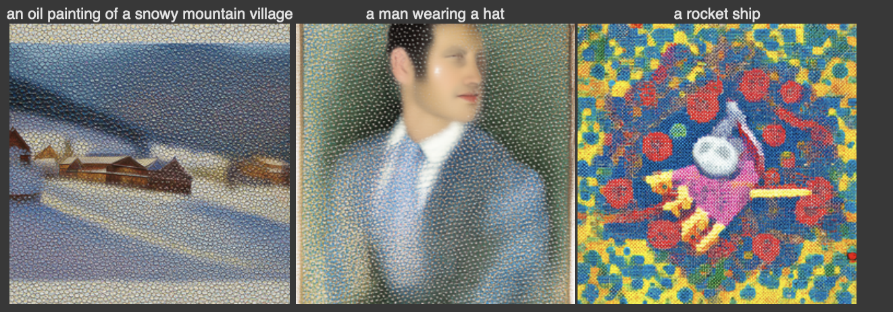 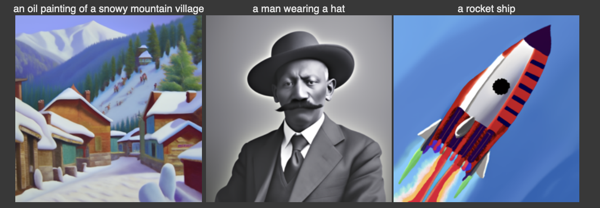 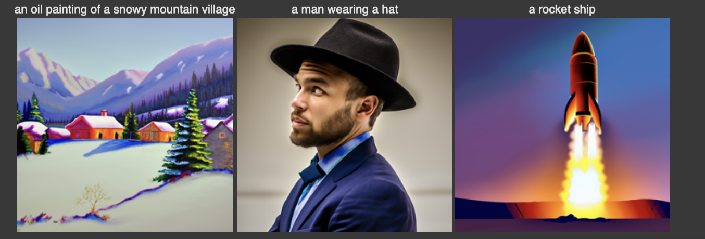
As can be seen, the quality with 5 inference steps is very low, but gradually as we increase the number of inferences they get better and better. This can especially be seen in the “oil painting” image, where the colors on the last row are much more vibrant than that in the first and also the one immediately above it. It is interesting to note the “grainy” structure present in the first set; I don’t really have an explanation for why that occurs, but it is consistent across three images so I do imagine there to be an explanation.
1.1 Implementing the Forward Process
To begin, we need to understand how a diffusion model learns. In essence, diffusion models operate by learning how to remove noise from an image – given an image with some noise \(\epsilon\) added to it, we train the model to detect this noise \(\epsilon\) and remove it from the image. To do this, we must first go over how we add noise to an image to begin with. For us, we will generate the image as follows: at some timestep \(t\), we compute:
\[x_t = \sqrt{\overline \alpha_t} x_0 + \sqrt{1 - \overline \alpha_t} \epsilon \text{ where } \epsilon \sim N(0, \mathbf I)\]Here, \(\overline \alpha_t\) is given to us in the alphas_cumprod variable. We now implement this noise
addition by using the torch.randn_like() function to generate an image with pure noise
(randn_like() samples from a gaussian distribution so that matches what we want for \(\epsilon\)), then add
noise according to the formula above. We do this on a test image campanile.jpg provided to us, and the
following is the result of adding the noise:
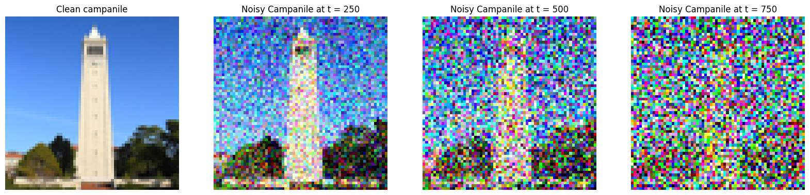
As is evident in the image, a higher \(t\) corresponds to more noise. This is expected, since a large \(t\) corresponds to more noise.
1.2 Classical Denoising
Here, we revisit classical denoising, which is the denoising algorithm we’ve used in previous project. This
just involves passing a Gaussian kernel over your image, which we do using TF.gaussian_blur(). The results
are shown below:
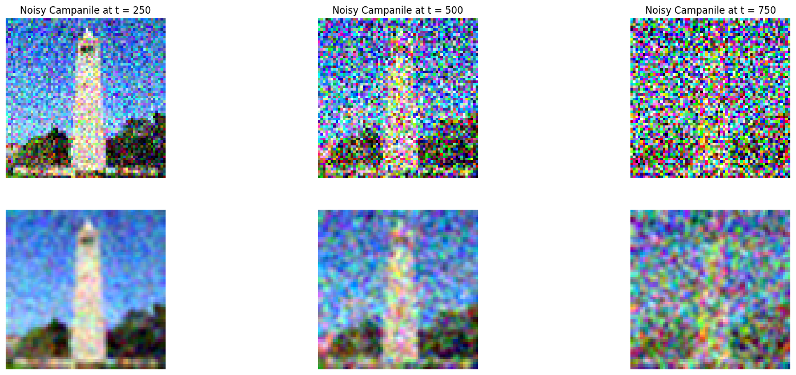
Clearly the Gaussian blur is bad when you have a lot of noise – you can barely tell that there is a campanile behind the \(t = 750\) image, but it is “passing” for small amounts of noise. This is exactly what we got from previous projects, so there’s no surprise here.
1.3 One-Step Denoising
Now we move to using the unet to denoise our image. We pass in the prompt of "a high quality photo" because
our model was trained using text embedding, so to get it to generate good images we must pass this in. To
perform the one-step denoise, all we have to do is rearrange the formula given above for \(x_0\) in terms of
\(x_t\) and \(\epsilon\), the latter of which is the noise estimate given to us by the unet. The equation we
need to implement is then:
Doing so, and running the noisy images we computed from earlier through our unet, we get the following reconstructed images from the noise:
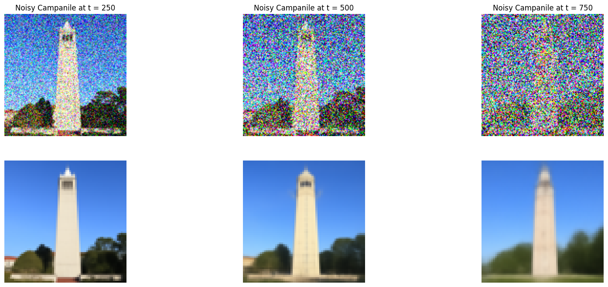
Immediately, we can see that the denoising using the unet is much better than the Gaussian kernel. However, one thing we do notice is that the unet seems to fill in the gaps a lot: at \(t = 750\), the recovered image hardly looks like the campanile anymore. This also makes sense, since the unet is creating pixels and generating information where the information was destroyed, so the reconstruction process isn’t going to be perfect. Despite its flaws, it’s still much better than the Gaussian kernel simply because it outputs a clear image (in my opinion).
1.4 Iterative Denoising
In the previous section, we implemented a one-step denoising algorithm, so in essence we inferred \(x_0\)
after only a single iteration through our unet. Here, we will implement an iterative approach, which passes
the image back through the unet multiple times before we get an output. The number of times we want to do
this is determined by us, for this project we first start out with \(T = 1000\), but instead of running
through the entire list of \(T\), we instead create a list strided_timesteps that skips through the list at
a constant interval. This allows us to speed up the computation without sacrificing too much on accuracy.
Because we are now taking strides through our timesteps and not taking adjacent ones, we need to modify our formula for calculating the next image \(x_t\). The equation now becomes:
\[x_{t'} = \frac{\sqrt{\overline \alpha_{t'}} \beta_t}{1 - \overline \alpha_t} x_0 + \frac{\sqrt{\alpha_t} (1 - \overline \alpha_t)}{1 - \overline \alpha_t} x_t + v_\sigma\]In essence, this can be thought of as a linear interpolation between the point \(x_t\) and \(x_0\), with a step size in the direction of \(x_0\) given by the size of the strides we take.
This \(v_{\sigma}\) term is random noise that DeepFloyd predicts, we won’t really care about it from a technical
standpoint, but we will add it into our iteration using the add_variance() function provided to us.
Here, we show the output images every 5 strides we take, as well as the final image outputted by the model.
From left to right, we go from t = 690, 540, 390, 240, 90 and finally t = 0.
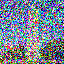 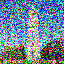 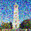
Here, we can see the denoising actively taking place, as the visible noise in the image slowly goes away. Compared to the one-step denoising, we see that this gives us a better result than the one-step denoising, and the Gaussian blur, shown below:
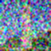
Compared to the one-step denoising, the iterative denoising keeps more features of the campanile (although incorrect) than the one-step denoised output, which to me is an improvement. It also goes without saying that the Gaussian blur is horrible here.
1.5 Diffusion Model Sampling
Now, we move from denoising an image, to generating an image from scratch. To do this, all we have to do is
iteratively denoise a random image, which is the same as image generation. Here, we feed it the prompt "a
high quality photo", and just let the unet run and freely generate images. Below, we show the 5 images
generated from the iterative_denoise() function:
To be honest, when I saw these I was quite happy already because it shows that the diffusion model actually works – it takes an image generated completely from noise, and transforms it onto the manifold of “high quality photos”. However, as we’ll see in the next section, this can be done much better using classifer free guidance.
1.5 Classifier Free Guidance
One technique to improve the image quality is to employ a method known as classifier free guidance. Instead
of a single pass through the unet, we now pass the image through the unet twice: once with the prompt we
desire, and once with an empty prompt, which we call an “unconditional noise estimate”. This can be done
using the prompt_embeds_dict[''] entry. Then, if \(\epsilon_c\) and \(\epsilon_u\) represent the
conditional and unconditional noise estimate, respectively, we can then generate the overall noise estimate
be equal to:
Making this modification is pretty easy to our already exisiting algorithm: we have one variable
model_output which stores the conditioned noise estimate, and another called uncond_model_output that
stores the unconditioned estimate. Then, we use the formula above to get a total noise_est, which we then
feed through the same process as the iterative denoising. With this approach, the following is what we get:
Here, there are two things to immediately notice: first, the images are certainly higher quality, as the color contrast is more vibrant and the images just look better overall (i don’t really know how else to describe it). The second, and more interesting thing, is that there is a cost we paid for higher quality images, and that is the diversity of the images. In the previous section with iterative denoising only, we got essentially 5 unique photos, but here we can see that 3/5 of our photos are landscape and night sky photos while only one is of a woman, signaling a decrease in diversity. This is indeed the expense we pay theoretically with CFG, but to me this is certainly one I’m willing to pay because holy crap these images look good.
1.7.0 Text to Image Translation
This part was pretty cool. Here, we do something very simple: we take an existing image, add noise to it, and
then let the unet denoise our image. The more noise we add, the less the noised image resembles the test
image, so for small t, we should get images that resemble nothing like our original, and for large t we
expect the opposite. This is exactly what we see on the campanile.jpg image, shown below:

Clearly, when t = 1 the image looks nothing like the campanile (on the left), and when t = 20 we bear the
most resemblance, where we not only have a central tower but also the trees behind it. It certainly doesn’t
look like the campanile at all, but it definitely is the closest out of the list. This does show the text to
image translation is working properly, as the output is exactly what we expect.
I also did this for two other images. I found a cool image of latte art saved on my phone, so I decided to
use that and the result that came out was actually pretty cool. All of these were done with the same values
for t.

I think what’s really cool about this one is how close the t = 20 image looks to the original one: it even
kept the milk art pattern, except the model turned it into leaves instead. You can also clearly how
“persistent” each feature in the original image is: even at t = 7, 10, the circular feature of the coffee
mug is still kept intact through the cornea on the eye, and even (to some extent) on the sun at t= 5. Of
course, I have no explanation for why some features are more persistent than others, but it is something
really cool to notice. Finally, I ran this on another photo of the campanile I had in my camera roll:
This one also turned out really nice: the image at t = 10 almost certainly looks like a real lighthouse
somewhere. t = 20 is also very interesting, since it seems to have kept nearly all the features of the
original image, more so than the other two images I tried. This is possibly the only image in all three
sequences which appears to be more complex than the original, which is interesting to note.
1.7.1 Editing Hand-Drawn and Web Images
Here, we implement the same process, except with images we find from the web and also two hand drawn ones. Really everything that needs to be said here was already said above, so I’ll just show the images that I got here. For the web image, I really liked the avocado one provided to us so I didn’t bother changing it:
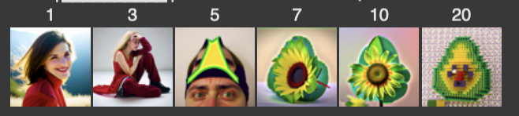
As for the hand drawn images, I first drew a house (yeah I know, I’m creative and totally didn’t take this from the project spec)
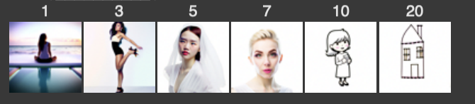
It’s strange how the unet just defaults to humans here for some reason. Finally, I wanted to see how far I could push this, so I just drew a bare spiral and this is what I got:
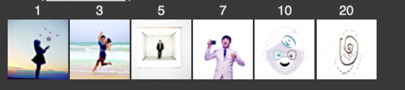
Obviously, none of the pictures really look like the spiral (I didn’t expect any of them to), but it is again interesting to note that all of the images have a person inside of them, and I find that somewhat strange.
1.7.2 Inpainting
In this section, our goal is to take an image, and only edit a portion of the image out. We achieve this by imposing a mask onto the denoising loop, or in other words on every iteration we force the parts where the mask is 0 to have the same pixels as the original image. This can be done through the following equation:
\[x_t = m x_t + (1 - m) \text{forward}(x_0, t)\]where \(x_0\) represents the original image, and \(m\) is our mask. Otherwise, the diffusion sampling remains the exact same. The result of this is that at the points where the mask is zero we keep the original image, and points where the mask is 1 will be replaced by a generated image.
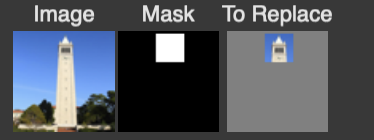
I did this on the campanile using the above mask, and got this result:
As shown in the picture, the top of the campanile is now replaced by the top of a lighthouse, which was generated from the diffusion model. I did this on the other two images I mentioned a second campanile photo, and also the latte art. For the latte art, I decided to crop out the art pattern, which gave me this result:
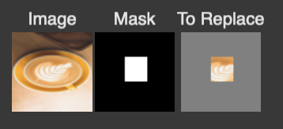
I’m honestly not sure what it is in the middle, but to me it looks like a latte inside a latte and I think that’s cool. Then, for the second campanile photo, this one I’m very happy with:
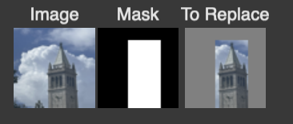
Something about this is just so satisfying, maybe it’s the gradual blending that takes place from the light to the dark blue of the original image. Anyways, can you tell I really like this one?
1.7.3 Text-Conditioned Image-to-Image translation
This is the exact same as 1.7.1, except now we feed the unet a text prompt that isn’t just "a high quality
photo", but something more substantial. We have a good number of prompts to choose from; to begin, I started
off with the campanile and the prompt "a rocket ship":
Clearly, for low t, we see the rocket ship, then as t increases the image gradually shapes to look more
like the campanile. I then did the latte art with the prompt "a lithograph of a waterfall":
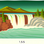
Again, same deal. Finally, I did the second campanile photo with "an oil painting of a snowy mountain
village":
1.8 Visual Anagrams
Here, we generate visual anagrams, which are essentially images that look like one thing from one orientation, then when we flip them it looks like something else. To generate this, we take two prompts, and generate two noise estimates from the prompts. However, for the second prompt, we will generate the noise estimate on the flipped image. Then, combining these noise estimates together to get an overall noise estimate, which we then feed through the diffusion loop. The flipped noise estimate will generate the flipped image, and the first noise estimate will generate the “upright” one.
The implementation of this is also quite simple, we run the image through the unet 4 times: twice accounting for the orientations, then twice for each to account for the conditioned and unconditioned noise estimates (remember we are using CFG here). We then flip the image before passing it into the second set of noise estimations, then flip back before we average the two \(\epsilon_1\) and \(\epsilon_2\) noise estimates. The rest of the code is completely identical to the diffusion sampling.
Here are the results. To begin, we used the prompts "an oil painting of people around a campfire" and "an
oil painting of an old man", the latter of which is displayed when the image is flipped.
I then did this for two other prompt combinations. The first is "an oil painting of an old man" with "a
photo of the amalfi coast" (coast is misspelled in the dictionary and I didn’t bother changing it):
Given that this is what Amalfi looks like (I had to google it):
I’d say that this is a pretty good anagram. Finally, I did "an oil painting of people around a campfire"
with "a photo of a dog":
Clearly, they all exactly resemble one thing when upright and another when flipped, so this was a success.
1.10 Hybrid Images
Finally, we revisit hybrid images. To generate hybrid images, we do nearly the same thing as the previous
section, except the overall noise estimate we now obtain by passing \(\epsilon_1\) (the noise estimate given
prompt 1) through a low pass filter, and passing \(\epsilon_2\) through a high pass filter. The result is a
combined image that looks like one prompt from up close, and another form afar. To implement the high pass
filter, I use TF.gaussian_blur, and do the same thing as creating a Laplacian stack we did all the way back
in project 2. The rest of the code is literally the same as the last section, minus the flips. First, I used
the skull and waterfall prompts, so the image looks like a skull from afar but a waterfall from up close:
You kind of have to go pretty far back to see the skull, but it definitely is there. I then did the following two other prompts:
Project 5B: Training your own diffusion model!
Part 1: Single-step denoising UNet
In this section, we explore how to create our own diffusion model on MNIST sing PyTorch. To begin, we will build the UNet, the fundamental building block of our denoiser. We will optimize over the standard L2 loss,
\[L = \| D_\theta(z) - x \|^2\]where \(D_\theta(z)\) is the output of our denoiser. The structure of our UNet is as follows, as given on the project spec:
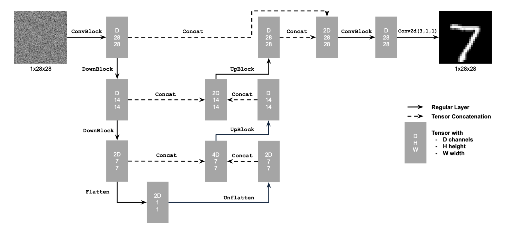
Each of the operations in this figure are described in the figure below:
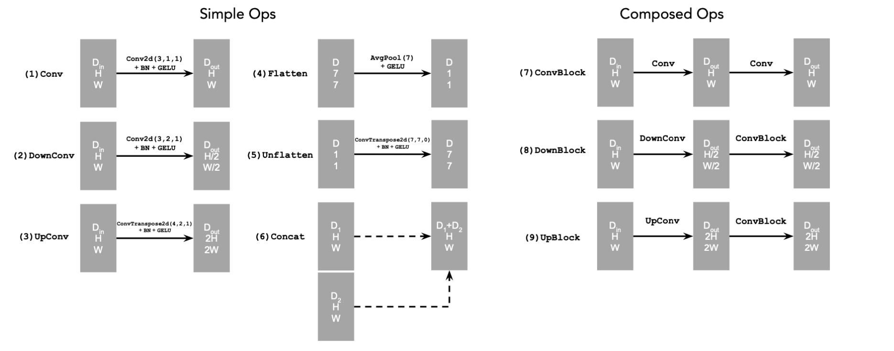
Here, we use the torch.nn builtin functions to build our denoiser, keeping track of the dimensions as we
go.
1.2 Using the UNet to Train a Denoiser
Just like part A, our first objective so generate noisy images to train our UNet with. To do this, we use the
equation \(z = \sigma \epsilon\), where \(\sigma\) is a “hyperparameter” that we control, and \(\epsilon\) is
drawn from a uniform distribution using torch.randn_like(). Over different values of $\sigma$, we get
varying degrees of noise:
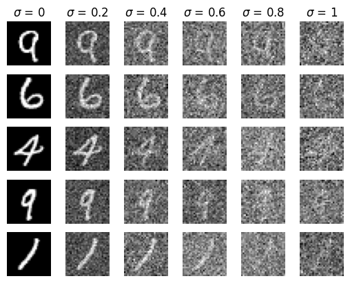
As shown above, as $\sigma$ approaches 1, we approach pure noise, and $\sigma$ close to 0 means very little
noise. We then train the model using these noisy images, starting with $\sigma =0.5$. As for our training
parameters, I stuck with the recommended configurations batch_size = 256, num_epochs = 5, and
num_hiddens = 128. We then also use the Adam optimizer, provided by torch.optim.Adam() with a learning
rate of lr = 1e-4. Computing the training loss, we see that it looks exactly as we expect:
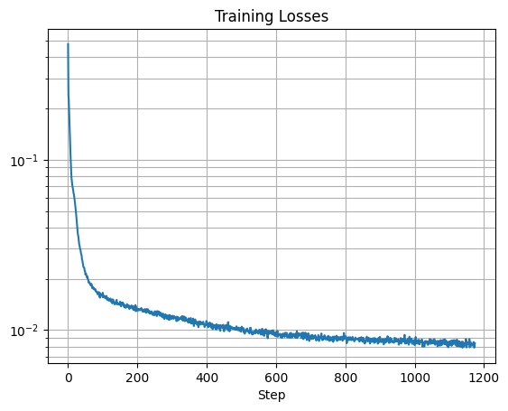
There’s nothing really to comment here; the loss should go down over time, and also hit a plateau as in all
neural networks that I’ve seen so far. The num_epochs hyperparameter here sets the number of times we run
through the data; the larger this value, the more accurate our model becomes. We can see this by showing the
output of the model after 1 epoch and comparing it against 5 epochs of training:
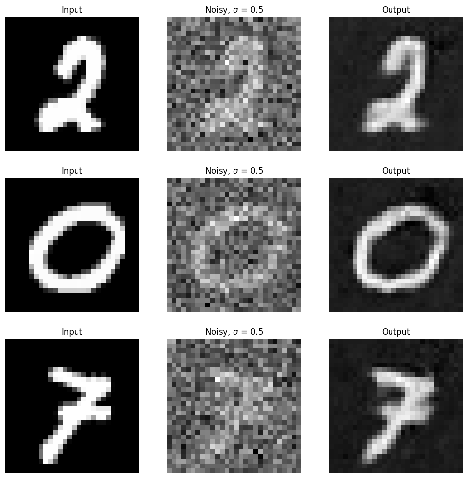
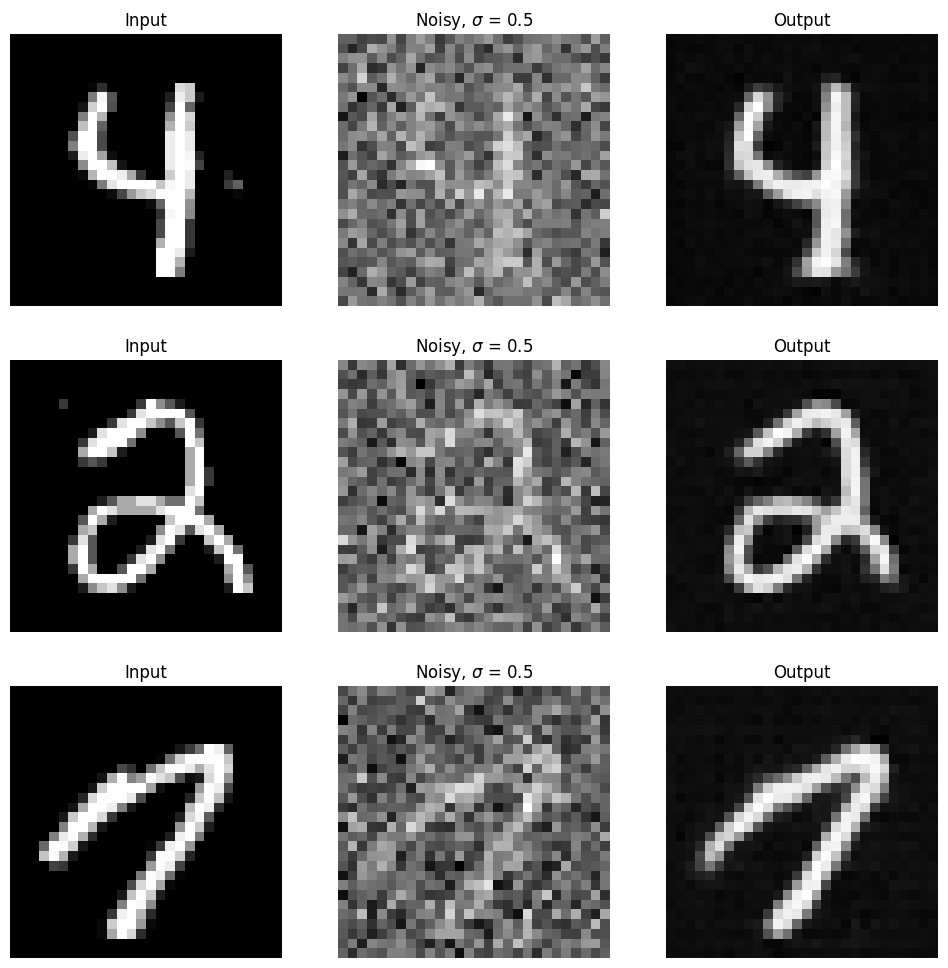
Clearly, we can see that the recovery is much better after 5 epochs when compared to 1, as expected.
1.2.2 Out of Distribution Testing
Another thing we can do to test the accuracy of our model is to test the model on data that we didn’t train it on. In particular, we can now expose the model to varying amounts of noise (by varying \(\sigma\)). For differing values of \(\sigma\), the following is the result (after 5 epochs of training)
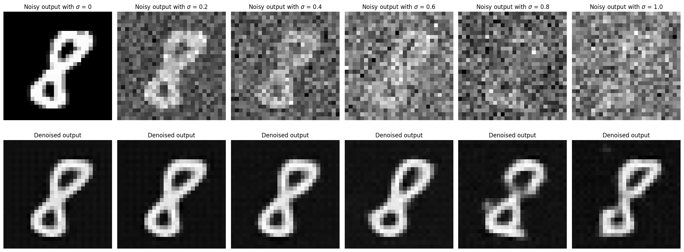
Here, we can see that the UNet clearly performs very well in terms of deciphering the number 8, even when the noise is turned up all the way to \(\sigma = 1\). This speaks greatly to the accuracy of the model, as it can identify the number even under the presence of so much noise.
Part 2: Training a Diffusion Model
Now, with the single step UNet out of the way, we now turn to training the diffusion model, for which we will follow DDPM. Here, we will make a similar adjustment as in part A: instead of training the model to recover the image, we instead get the model to estimate the noise in the image instead. This is the same thing we did in part A. Further, we will also add time conditioning to the model, by introducing a new parameter \(t\), which is the same one we had in part A. The time-conditioned UNet block diagram is as follows:
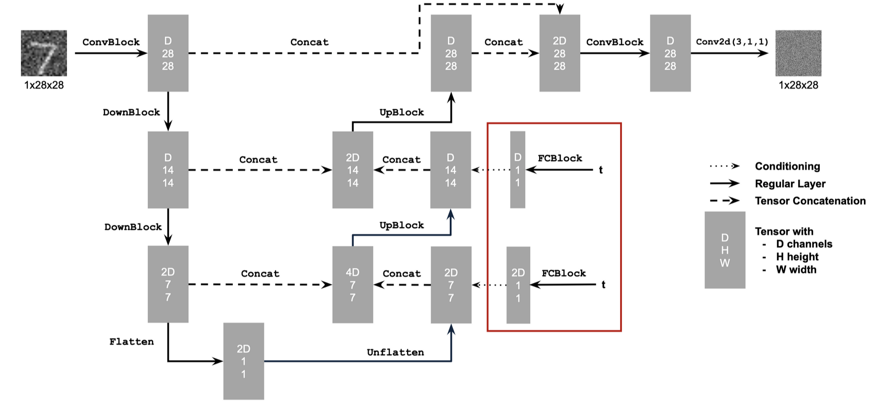
so the only difference are these two FCBlocks that we introduce, which are initialized as follows:
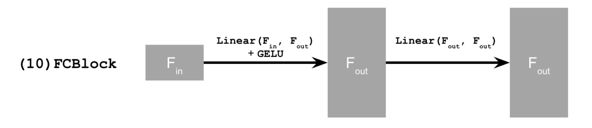
again, torch.nn functions realize this. Further, one thing to be careful about is that here, we will
constrain t to fall between 0 and 1, so when we pass our t into the UNet, we normalize it by passing in
1/T instead, where T represents the total number of timesteps we have.
2.2: Training the UNet
The process of training the time conditioned UNet is roughly the same, except for one slight difference: with
the addition of the new parameter t, we now randomly choose a t value for each image, which means that we
apply a random amount of noise to each input image that we train on. This way, the diffusion model can train
on a wide range of t, and hopefully be able to cover the entire range of [0, 1].
For this training, I set the parameters: batch_size = 128, num_epochs = 20, an initial lr = 1e-3,
and also added a learning
rate decay using torch.optim.lr_scheduler.ExponentialLR() equal to \(0.1^{1/\text{num_epochs}}\).
The plot of loss over time is as follows:

Just like last time, this indicates that the training went well.
2.3 Sampling the UNet
This sampling process is the exact same as the one we implemented in part A, except we disregard the variance
and instead just include it as a beta term. We can then sample the model at different epochs, wihich I did
at 5 and 20:
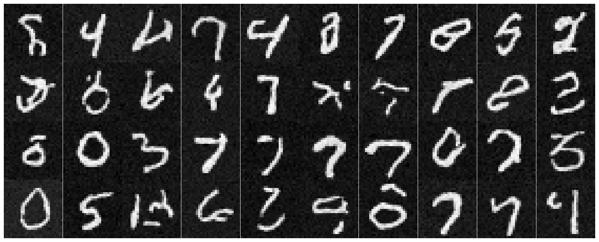
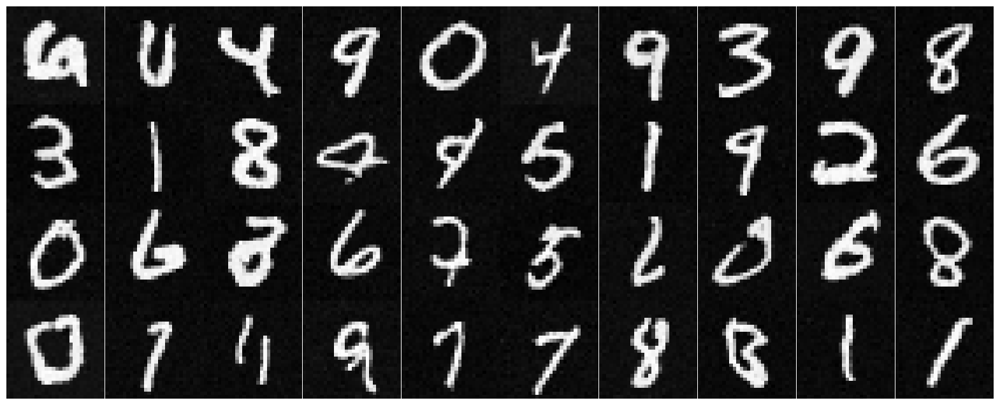
Note that the numbers after 20 epochs of training do look better, but there’s still lots of room for improvement.
2.4 Class Conditioning
The final addition to our UNet that we will apply is called class conditioning. Essentially, this allows us
to not only generate better image, but also so that we can control what our UNet outputs (notice that the
sampling from above is basically random numbers). To do this, we add a new parameter c, which represents
the class (or basically the digit) the image represents. We then encode this as a one-hot vector, but because
we still want the UNet to work when not given class conditioning, we implement a 10% dropout error where with
a probability of 10%, the vector c is just all zeros. We then train the UNet in the exact same way as the
previous two parts.
The training loss plot is shown below, showing that the training went well:
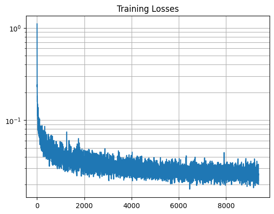
We can then sample from the class-conditioned UNet in the same way as before, except now we can feed the UNet a class that we want. Doing so, we obtain the following two samplings at 5 and 20 epochs:
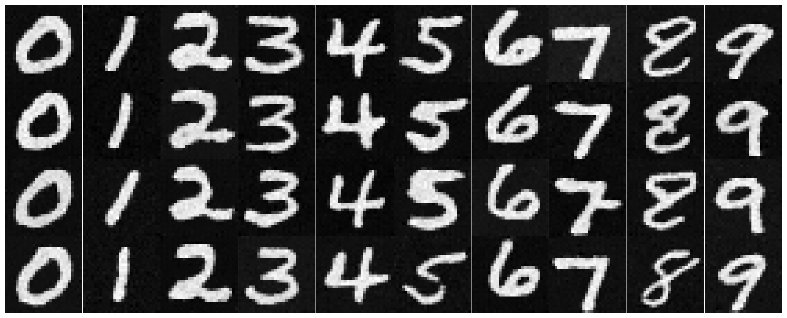
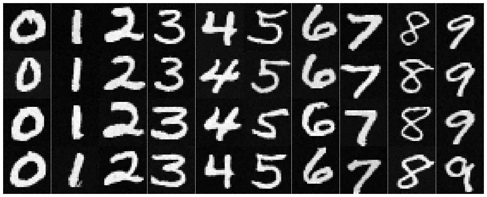
Here, we can see that the results are much better than the TCNet. Personally, I think this is down to the fact that because we can control based on class, the UNet now can now “categorize” the patterns based on class, whereas in the TCNet case it cannot – it’s just given an image and is told to denoise it. This demonstrates how class-conditioning helps the training process, leading to better results.
Reflection
Overall, I think this project was very very hard, but also fun at the same time. In part A, it’s especially cool to see what kinds of wacky things you can generate with diffusion models, and it’s infinitely more cool that in part B we made one from scratch. So, while this was definitely the hardest project I’ve done so far, it’s also been one of the most rewarding, and I really feel like I’ve learned a lot from it. Thank you course staff for putting this new project together!